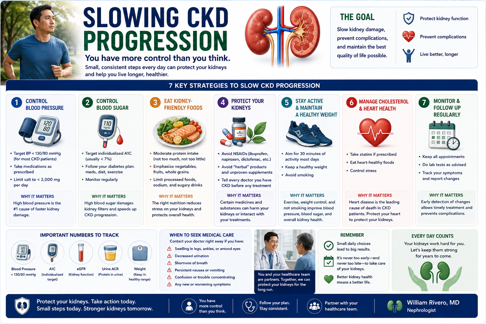
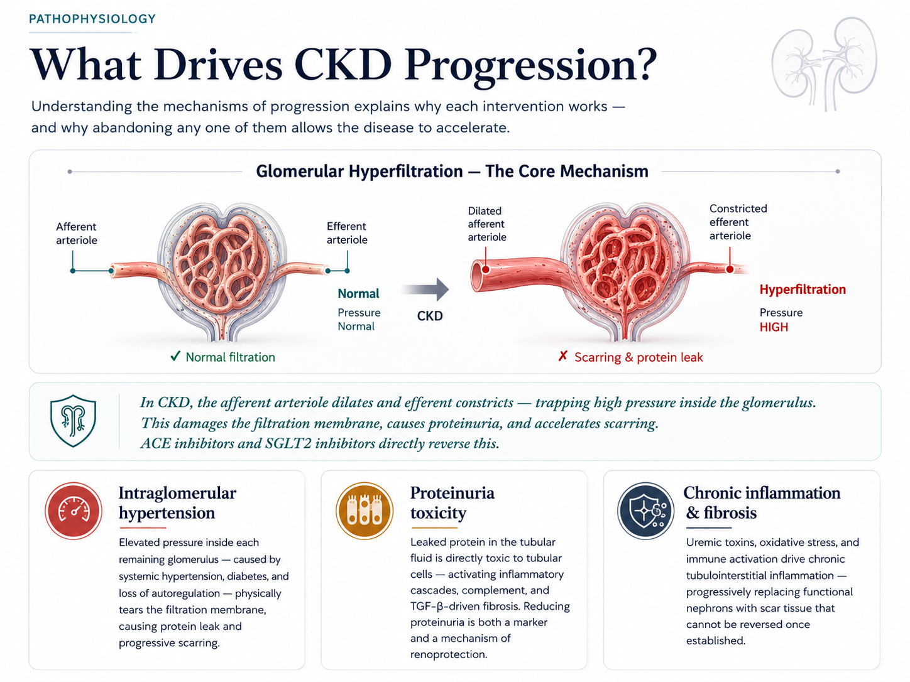

Can CKD Really Be Slowed?Tunay Ba Itong Mapapabagal ang CKD?Tinuod Ba nga Mapahintay ang CKD? Tunay Ba Itong Mapapabagal ing CKD?

Yes — definitively. CKD progression is not inevitable. The rate at which kidney function declines varies enormously between patients. With optimal management, many patients remain stable for decades. The difference between fast and slow progression is largely determined by how well risk factors are treated — not by luck.Oo — tiyak. Ang pagsulong ng CKD ay hindi inevitável. Ang bilis ng pagbaba ng function ng bato ay malaki ang pagkakaiba sa pagitan ng mga pasyente. Sa pinakamainam na pamamahala, maraming pasyente ang nananatiling matatag sa loob ng mga dekada. Ang pagkakaiba sa pagitan ng mabilis at mabagal na pagsulong ay malaking bahagi na tinutukoy ng kung gaano kahusay ang paggamot sa mga risk factor — hindi ng swerte.Oo — tiyak. Ang pagsulong sa CKD dili inevitável. Ang bilis sa pagkubos sa function sa bato lahi kaayo sa taliwala sa mga pasyente. Sa pinakamainam nga pamamahala, daghang pasyente nagpabilin nga matatag sulod sa mga dekada. Ang kalainan sa taliwala sa paspas ug hinay nga pagsulong dako nga bahin nga gitino sa kung unsa ka maayo ang pagtambal sa mga risk factor — dili sa suwerte. Oo — tiyak. Ing pagsulong ning CKD ya ali inevitável. Ing bilis ning pagbaba ning function ning batu ya malaki ing pagkakaiba king pagitan ning deng pasyente. King pinakamainam a pamamahala, dacal a pasyente ing nananatiling matatag king loob ning deng dekada. Ing pagkakaiba king pagitan ning mabilis at mabagal a pagsulong ya malaking bahagi a tinutukoy ning nung gaano kahusay ing paggamut king deng risk factor — ali ning swerte.
The way I explain this in clinic — the MRT analogyKung paano ko ito ipinaliliwanag sa klinika — ang paghahalintulad sa MRTKung unsaon nako kini pagpojliwa sa klinika — ang MRT analogy Nung paano ko ini ipinaliliwanag king klinika — ing paghahalintulad king MRT
Think of CKD like riding the MRT. There is a final destination, and the train is moving. What we are trying to influence is the speed of the train — not whether the journey ends. Whether you arrive fast or arrive late depends on your discipline with medications, blood pressure, blood sugar, salt, and follow-up. For some patients the train slows to a crawl and never reaches the last station in their lifetime. For others, missed medications and uncontrolled BP put it on express. The choices on this page are how you slow the train.Isipin ang CKD tulad ng pagsakay sa MRT. May huling destinasyon, at ang tren ay gumagalaw. Ang sinusubukan naming impluwensyahan ay ang bilis ng tren — hindi kung matatapos ang biyahe. Kung mabilis o late kayo darating ay nakasalalay sa inyong disiplina sa mga gamot, presyon ng dugo, asukal sa dugo, asin, at follow-up. Para sa ilang pasyente ang tren ay bumagal nang husto at hindi kailanman umabot sa huling istasyon sa kanilang buhay. Para sa iba, ang nalalagpasang gamot at hindi kontroladong BP ay naglalagay nito sa express. Ang mga pagpiling nasa pahinang ito ang paraan ng pagpapabagal ng tren.Hunahunaa ang CKD sama sa pagsakay sa MRT. Adunay katapusang destinasyon, ug ang tren nagpalihok. Ang atong gisulayan nga impluwensyahan mao ang bilis sa tren — dili kung matapos ang biyahe. Kung paspas o late kamo moabot nagsalig sa imong disiplina sa mga tambal, presyon sa dugo, asukal sa dugo, asin, ug follow-up. Alang sa pipila ka pasyente ang tren naghinay nang husto ug wala kailanmang moabot sa katapusang istasyon sa ilang kinabuhi. Alang sa uban, ang nalaktang tambal ug wala kontroladong BP nagbutang niini sa express. Ang mga pagpili sa pahinang kini mao ang paagi sa pagpahinay sa tren. Isipin ing CKD tulad ning pagsakay king MRT. Atin huling destinasyon, at ing tren ya gumagalaw. Ing sinusubukan naming impluwensyahan ya ing bilis ning tren — ali nung matatapos ing biyahe. Nung mabilis o late kayu darating ya nakasalalay king inyu disiplina king deng gamut, presyon ning daya, asukal king daya, asin, at follow-up. Para king ilang pasyente ing tren ya bumagal nang husto at ali kailanman umabot king huling istasyon king kanilang biye. Para king iba, ing nalalagpasang gamut at ali kontroladong BP ya naglalagay nini king express. Ing deng pagpiling nasa pahinang ini ing paraan ning pagpapabagal ning tren.
With optimal management, eGFR decline can be reduced from >5 mL/min/year to <2 mL/min/year — a difference of years to decades before kidney failure.Sa pinakamainam na pamamahala, ang pagbaba ng eGFR ay maaaring mabawasan mula sa >5 mL/min/taon hanggang <2 mL/min/taon — isang pagkakaibang taon hanggang dekada bago ang pagpalya ng bato.Sa pinakamainam nga pamamahala, ang pagkubos sa eGFR mahimong makunhuran gikan sa >5 mL/min/tuig ngadto <2 mL/min/tuig — usa ka kalainan sa mga tuig hangtod sa mga dekada sa wala pa ang pagpalya sa bato. King pinakamainam a pamamahala, ing pagbaba ning eGFR ya maaaring mabawasan mula king >5 mL/min/banua anggang <2 mL/min/banua — metung a pagkakaibang banua anggang dekada bago ing pagpalya ning batu.
What "slowing progression" meansAno ang ibig sabihin ng "pagpapabagal ng pagsulong"Unsa ang kahulogan sa "pagpahinay sa pagsulong" Ano ing ibig sabihin ning "pagpapabagal ning pagsulong"
Normal aging causes eGFR to fall ~1 mL/min/year after age 40. CKD without intervention falls 3–10+ mL/min/year. With optimal management, decline can approach or match normal aging — effectively preserving kidney function for decades.Ang normal na pagtanda ay nagdudulot ng pagbaba ng eGFR ng ~1 mL/min/taon pagkatapos ng edad 40. Ang CKD nang walang interbensyon ay bumababa ng 3–10+ mL/min/taon. Sa pinakamainam na pamamahala, ang pagbaba ay maaaring malapit o makatugma sa normal na pagtanda — epektibong pinapanatili ang function ng bato sa loob ng mga dekada.Ang normal nga pagtanda nagdulot sa pagkubos sa eGFR og ~1 mL/min/tuig human sa edad 40. Ang CKD nga walay interbensyon mohulog og 3–10+ mL/min/tuig. Sa pinakamainam nga pamamahala, ang pagkubos mahimong moduol o makatugma sa normal nga pagtanda — epektibong nagpreserba sa function sa bato sulod sa mga dekada. Ing normal a pagtanda ya nagdudulot ning pagbaba ning eGFR ning ~1 mL/min/banua kapabanuan ning edad 40. Ing CKD nang alang interbensyon ya bumababa ning 3–10+ mL/min/banua. King pinakamainam a pamamahala, ing pagbaba ya maaaring malapit o makatugma king normal a pagtanda — epektibong pinapanatili ing function ning batu king loob ning deng dekada.
Every percentage point mattersBawat porsyento ay mahalagaMatag porsyento mahinungdanon Bawat porsyento ya importante
A 30% reduction in the rate of progression can delay dialysis by 5–10 years. That is 5–10 years of normal eating, normal activity, no needles, no schedules. The cumulative benefit of small consistent improvements is enormous.Ang 30% na pagbawas sa bilis ng pagsulong ay maaaring mapaliban ang dialysis ng 5–10 taon. Iyon ay 5–10 taon ng normal na pagkain, normal na aktibidad, walang karayom, walang iskedyul. Ang kumulatibong benepisyo ng maliliit na tuluy-tuloy na pagpapabuti ay napakalaki.Ang 30% nga pagkubos sa bilis sa pagsulong mahimong mapalangan ang dialysis og 5–10 ka tuig. Kana 5–10 ka tuig sa normal nga pagkaon, normal nga aktibidad, walay dagom, walay iskedyul. Ang kumulatibong benepisyo sa gagmay nga tuloy-tuloy nga mga pagpaayo dako kaayo. Ing 30% a pagbawas king bilis ning pagsulong ya maaaring mapaliban ing dialysis ning 5–10 banua. Iyun ya 5–10 banua ning normal a pamangan, normal a aktibidad, alang karayom, alang iskedyul. Ing kumulatibong benepisyo ning maliliit a tuluy-tuloy a pagpapabuti ya napakalaki.
What Drives CKD Progression?Ano ang Nagpapatakbo ng Pagsulong ng CKD?Unsa ang Nagpahinabo sa Pagsulong sa CKD? Ano ing Nagpapatakbo ning Pagsulong ning CKD?

Blood Pressure Control — The Single Most Impactful InterventionKontrol ng Presyon ng Dugo — Ang Pinaka-epektibong InterbensyonKontrol sa Presyon sa Dugo — Ang Pinaka-epektibong Interbensyon Kontrol ning Presyon ning Daya — Ing Pinaka-epektibong Interbensyon
Uncontrolled hypertension is both a cause and consequence of CKD. Every 10 mmHg reduction in systolic blood pressure reduces the risk of kidney failure by approximately 17%.Ang hindi kontroladong hypertension ay parehong sanhi at kahihinatnan ng CKD. Bawat 10 mmHg na pagbaba ng systolic blood pressure ay nagpapababa ng panganib ng pagpalya ng bato ng humigit-kumulang 17%.Ang wala kontroladong hypertension pareho nga hinungdan ug sangputanan sa CKD. Matag 10 mmHg nga pagkubos sa systolic blood pressure nagpababa sa risgo sa pagpalya sa bato og hapit 17%. Ing ali kontroladong hypertension ya parehong sanhi at kahihinatnan ning CKD. Bawat 10 mmHg a pagbaba ning systolic blood pressure ya nagpapababa ning panganib ning pagpalya ning batu ning humigit-kumulang 17%.
Target <140/90 mmHg for general CKD; <130/80 mmHg for CKD with diabetes or significant proteinuria (KDIGO 2024).Target na <140/90 mmHg para sa pangkalahatang CKD; <130/80 mmHg para sa CKD na may diabetes o makabuluhang proteinuria (KDIGO 2024).Target nga <140/90 mmHg alang sa kinatibuk-ang CKD; <130/80 mmHg alang sa CKD nga adunay diabetes o makabuluhang proteinuria (KDIGO 2024). Target a <140/90 mmHg para king pangkalahatang CKD; <130/80 mmHg para king CKD a atin diabetes o makabuluhang proteinuria (KDIGO 2024).
ACE inhibitors and ARBs — the cornerstoneMga ACE inhibitor at ARB — ang pundasyonMga ACE inhibitor ug ARB — ang pundasyon Deng ACE inhibitor at ARB — ing pundasyon
These are not just blood pressure medications in CKD — they are kidney protectors. By dilating the efferent arteriole, they reduce intraglomerular pressure, cut proteinuria by 30–50%, and slow scarring independently of BP lowering. They are indicated in all CKD patients with proteinuria, regardless of blood pressure level.Hindi lamang ito mga gamot para sa presyon ng dugo sa CKD — ito ay mga tagapagtanggol ng bato. Sa pamamagitan ng pagpapalawak ng efferent arteriole, binabawasan nila ang intraglomerular pressure, pinutol ang proteinuria ng 30–50%, at pinabagal ang pag-uukit nang independyente sa pagbaba ng BP. Ito ay ipinahiwatig sa lahat ng pasyenteng CKD na may proteinuria, anuman ang antas ng presyon ng dugo.Kini dili lang mga tambal sa presyon sa dugo sa CKD — kini mga tagapanalipod sa bato. Pinaagi sa pagpalappad sa efferent arteriole, nagpababa sila sa intraglomerular pressure, nagputol sa proteinuria og 30–50%, ug nagpahinay sa pag-ukit nga independyente sa pagkubos sa BP. Kini gipakita sa tanan nga pasyente nga CKD nga adunay proteinuria, bisan unsa ang antas sa presyon sa dugo. Ali lamang ini deng gamut para king presyon ning daya king CKD — ini ya deng tagapagtanggol ning batu. King pamamagitan ning pagpapalawak ning efferent arteriole, binabawasan nila ing intraglomerular pressure, pinutol ing proteinuria ning 30–50%, at pinabagal ing pag-uukit nang independyente king pagbaba ning BP. Ini ya ipinahiwatig king amin ning pasyenteng CKD a atin proteinuria, anuman ing antas ning presyon ning daya.
Reducing Proteinuria — The Most Direct Marker of ProgressionPagbabawas ng Proteinuria — Ang Pinaka-direktang Tagapagpahiwatig ng PagsulongPagkubos sa Proteinuria — Ang Pinaka-direktang Timailhan sa Pagsulong Pagbabawas ning Proteinuria — Ing Pinaka-direktang Tagapagpahiwatig ning Pagsulong
Urinary albumin (UACR) is the single best predictor of kidney decline rate. Reducing UACR by 30% or more is associated with a 30–40% reduction in the risk of kidney failure.Ang urinary albumin (UACR) ang pinakamahusay na tagahula ng bilis ng pagbaba ng bato. Ang pagbawas ng UACR ng 30% o higit pa ay nauugnay sa 30–40% na pagbaba ng panganib ng pagpalya ng bato.Ang urinary albumin (UACR) ang pinakamahusay nga tighula sa bilis sa pagkubos sa bato. Ang pagkubos sa UACR og 30% o labaw pa nalangkit sa 30–40% nga pagkubos sa risgo sa pagpalya sa bato. Ing urinary albumin (UACR) ing pinakamahusay a tagahula ning bilis ning pagbaba ning batu. Ing pagbawas ning UACR ning 30% o higit pa ya nauugnay king 30–40% a pagbaba ning panganib ning pagpalya ning batu.
UACR is measured in a spot urine sample — an albumin-to-creatinine ratio. Even A2 microalbuminuria requires active treatment to prevent progression to A3.Ang UACR ay sinusukat sa spot urine sample — isang albumin-to-creatinine ratio. Kahit ang A2 microalbuminuria ay nangangailangan ng aktibong paggamot upang maiwasan ang pagsulong sa A3.Ang UACR ginasukod sa spot urine sample — usa ka albumin-to-creatinine ratio. Bisan ang A2 microalbuminuria nagkinahanglan og aktibong pagtambal aron mapugong ang pagsulong sa A3. Ing UACR ya sinusukat king spot urine sample — metung a albumin-to-creatinine ratio. Kahit ing A2 microalbuminuria ya nangangailangan ning aktibong paggamut upang maiwasan ing pagsulong king A3.
The Four Pillars of CKD PharmacotherapyAng Apat na Haligi ng CKD PharmacotherapyAng Upat ka Haligi sa CKD Pharmacotherapy Ing Apat a Haligi ning CKD Pharmacotherapy

| DrugGamotTambal Gamut | Local brand (Philippines)Lokal na brand (Pilipinas)Lokal nga brand (Pilipinas) Lokal a brand (Pilipinas) | Mechanism of kidney protectionMekanismo ng proteksyon sa batoMekanismo sa proteksyon sa bato Mekanismo ning proteksyon king batu | Key monitoringMahalagang pagmamasidHinungdanong pagmonitor Mahalagang pagmamasid |
|---|---|---|---|
| ACE inhibitor / ARB | Ramipril, Irbesartan, Losartan | Reduces efferent resistance → lowers intraglomerular pressure → cuts proteinuriaNagpapababa ng efferent resistance → nagpapababa ng intraglomerular pressure → nagpuputol ng proteinuriaNagpababa sa efferent resistance → nagpababa sa intraglomerular pressure → nagputol sa proteinuria Nagpapababa ning efferent resistance → nagpapababa ning intraglomerular pressure → nagpuputol ning proteinuria | K+, creatinine 1–2 weeks after startK+, creatinine 1–2 linggo pagkatapos magsimulaK+, creatinine 1–2 ka semana human sugdi K+, creatinine 1–2 lutu kapabanuan magsimula |
| Dapagliflozin | Catania / Rhea | Reduces afferent dilation via tubuloglomerular feedback → lowers intraglomerular pressure + anti-fibrotic + natriureticNagpapababa ng afferent dilation sa pamamagitan ng tubuloglomerular feedback → nagpapababa ng intraglomerular pressure + anti-fibrotic + natriureticNagpababa sa afferent dilation pinaagi sa tubuloglomerular feedback → nagpababa sa intraglomerular pressure + anti-fibrotic + natriuretic Nagpapababa ning afferent dilation king pamamagitan ning tubuloglomerular feedback → nagpapababa ning intraglomerular pressure + anti-fibrotic + natriuretic | eGFR, genital hygiene (yeast infections)eGFR, kalinisan ng genitalia (impeksyon ng lebadura)eGFR, kalinisan sa genitalia (impeksyon sa lebadura) eGFR, kalinisan ning genitalia (impeksyon ning lebadura) |
| Finerenone | Kerendia (imported) | Non-steroidal MRA → blocks aldosterone-driven renal and cardiac fibrosisNon-steroidal MRA → hinaharangan ang aldosterone-driven renal at cardiac fibrosisNon-steroidal MRA → nagpugong sa aldosterone-driven renal ug cardiac fibrosis Non-steroidal MRA → hinaharangan ing aldosterone-driven renal at cardiac fibrosis | K+ (hyperkalemia risk)K+ (panganib ng hyperkalemia)K+ (risgo sa hyperkalemia) K+ (panganib ning hyperkalemia) |
| Sodium bicarbonate | Generic tabs | Corrects metabolic acidosis → reduces ammoniogenesis-driven complement activation and fibrosisNagwawasto ng metabolic acidosis → nagpapababa ng complement activation at fibrosis na pinatakbo ng ammoniogenesisNagpabag-o sa metabolic acidosis → nagpababa sa complement activation ug fibrosis nga gipalihok sa ammoniogenesis Nagwawasto ning metabolic acidosis → nagpapababa ning complement activation at fibrosis a pinatakbo ning ammoniogenesis | Serum bicarbonate — target 22–26Serum bicarbonate — target 22–26Serum bicarbonate — target 22–26 Serum bicarbonate — target 22–26 |
| Rosuvastatin | Crestor / Generic | Reduces LDL-induced glomerulopathy + pleiotropic anti-inflammatory effects on the endotheliumNagpapababa ng LDL-induced glomerulopathy + pleiotropic anti-inflammatory na epekto sa endotheliumNagpababa sa LDL-induced glomerulopathy + pleiotropic anti-inflammatory nga epekto sa endothelium Nagpapababa ning LDL-induced glomerulopathy + pleiotropic anti-inflammatory a epekto king endothelium | LFTs at baseline; myopathy symptomsLFTs sa baseline; mga sintomas ng myopathyLFTs sa baseline; mga sintomas sa myopathy LFTs king baseline; deng sintomas ning myopathy |
| Urate-lowering (Febuxostat) | Feburic / Uricfree | Hyperuricemia causes urate crystal tubular deposition, oxidative stress, and direct nephron injuryAng hyperuricemia ay nagdudulot ng tubular deposition ng urate crystal, oxidative stress, at direktang pinsala sa nephronAng hyperuricemia nagdulot sa tubular deposition sa urate crystal, oxidative stress, ug direktang pinsala sa nephron Ing hyperuricemia ya nagdudulot ning tubular deposition ning urate crystal, oxidative stress, at direktang pinsala king nephron | Serum uric acid — target <6.0 mg/dLSerum uric acid — target <6.0 mg/dLSerum uric acid — target <6.0 mg/dL Serum uric acid — target <6.0 mg/dL |
Lifestyle — The Foundation That Drugs Cannot ReplacePamumuhay — Ang Pundasyon na Hindi Mapagpapalitan ng mga GamotPamumuhay — Ang Pundasyon nga Dili Mapulihan sa mga Tambal Pamumuhay — Ing Pundasyon a Ali Mapagpapalitan ning deng Gamut
Protein restriction pre-dialysis — 0.6–0.8 g/kg/dayPaghihigpit sa protina bago ang dialysis — 0.6–0.8 g/kg/arawPagdili sa protina sa wala pa ang dialysis — 0.6–0.8 g/kg/adlaw Paghihigpit king protina bago ing dialysis — 0.6–0.8 g/kg/aldo
Excess protein increases glomerular filtration pressure and uremic toxin production. Reducing protein intake to 0.6–0.8 g/kg/day slows hyperfiltration, reduces proteinuria, and delays dialysis. Ensure adequate calorie intake (30–35 kcal/kg/day) to prevent muscle wasting.Ang labis na protina ay nagpapataas ng glomerular filtration pressure at produksyon ng uremic toxin. Ang pagbabawas ng pagtanggap ng protina sa 0.6–0.8 g/kg/araw ay nagpapabagal ng hyperfiltration, nagpapababa ng proteinuria, at nagpapaliban ng dialysis. Tiyakin ang sapat na pagtanggap ng calories (30–35 kcal/kg/araw) upang maiwasan ang pag-aaksaya ng kalamnan.Ang sobrang protina nagpataas sa glomerular filtration pressure ug produksyon sa uremic toxin. Ang pagkubos sa pagkaon og protina ngadto sa 0.6–0.8 g/kg/adlaw nagpahinay sa hyperfiltration, nagpababa sa proteinuria, ug nagpalangan sa dialysis. Sigurohon ang saktong pagkaon og calories (30–35 kcal/kg/adlaw) aron mapugong ang pagkawala sa kaunuran. Ing labis a protina ya nagpapataas ning glomerular filtration pressure at produksyon ning uremic toxin. Ing pagbabawas ning pagtanggap ning protina king 0.6–0.8 g/kg/aldo ya nagpapabagal ning hyperfiltration, nagpapababa ning proteinuria, at nagpapaliban ning dialysis. Tiyakin ing sapat a pagtanggap ning calories (30–35 kcal/kg/aldo) upang maiwasan ing pag-aaksaya ning kalamnan.
Sodium restriction — <2,000 mg/dayPaghihigpit sa sodium — <2,000 mg/arawPagdili sa sodium — <2,000 mg/adlaw Paghihigpit king sodium — <2,000 mg/aldo
High sodium raises blood pressure and directly worsens proteinuria by increasing intraglomerular pressure. Sodium restriction amplifies the antiproteinuric effect of ACE inhibitors by 30–50% — it is synergistic, not additive. Cook fresh and avoid patis, toyo, processed foods.Ang mataas na sodium ay nagpapataas ng presyon ng dugo at direktang nagpapalala ng proteinuria sa pamamagitan ng pagtaas ng intraglomerular pressure. Ang paghihigpit sa sodium ay nagpapalaki ng antiproteinuric na epekto ng mga ACE inhibitor ng 30–50% — ito ay synergistic, hindi additive. Magluto nang sariwa at iwasan ang patis, toyo, at mga processed na pagkain.Ang taas nga sodium nagpataas sa presyon sa dugo ug direktang nagpalala sa proteinuria pinaagi sa pagtaas sa intraglomerular pressure. Ang pagdili sa sodium nagpadako sa antiproteinuric nga epekto sa mga ACE inhibitor og 30–50% — kini synergistic, dili additive. Magluto nga sariwa ug likayi ang patis, toyo, ug mga processed nga pagkaon. Ing matas a sodium ya nagpapataas ning presyon ning daya at direktang nagpapalala ning proteinuria king pamamagitan ning pagtaas ning intraglomerular pressure. Ing paghihigpit king sodium ya nagpapalaki ning antiproteinuric a epekto ning deng ACE inhibitor ning 30–50% — ini ya synergistic, ali additive. Magluto nang sariwa at iwasan ing patis, toyo, at deng processed a pamangan.
Smoking cessationPagtigil sa paninigarilyoPaghunong sa pagpanigarilyo Pagtigil king paninigarilyo
Smoking doubles the rate of CKD progression through renal vasoconstriction, oxidative stress, and endothelial damage. It is the single most impactful modifiable lifestyle factor for CKD progression after blood pressure control. Cessation benefit is seen within months.Ang paninigarilyo ay nagdoble ng bilis ng pagsulong ng CKD sa pamamagitan ng renal vasoconstriction, oxidative stress, at pinsala sa endothelial. Ito ang pinaka-epektibong nababagong lifestyle factor para sa pagsulong ng CKD pagkatapos ng kontrol ng presyon ng dugo. Ang benepisyo ng pagtigil ay makikita sa loob ng mga buwan.Ang pagpanigarilyo nagdoble sa bilis sa pagsulong sa CKD pinaagi sa renal vasoconstriction, oxidative stress, ug pinsala sa endothelial. Kini ang pinaka-epektibong mabag-ohong lifestyle factor alang sa pagsulong sa CKD human sa kontrol sa presyon sa dugo. Ang benepisyo sa paghunong makita sulod sa mga buwan. Ing paninigarilyo ya nagdoble ning bilis ning pagsulong ning CKD king pamamagitan ning renal vasoconstriction, oxidative stress, at pinsala king endothelial. Ini ing pinaka-epektibong nababagong lifestyle factor para king pagsulong ning CKD kapabanuan ning kontrol ning presyon ning daya. Ing benepisyo ning pagtigil ya makikita king loob ning deng bulan.
Regular exercise — 150 min/week moderate aerobicRegular na ehersisyo — 150 minuto/linggo na katamtamang aerobicRegular nga ehersisyo — 150 minuto/semana nga katamtamang aerobic Regular a ehersisyo — 150 minuto/lutu a katamtamang aerobic
Exercise reduces blood pressure, improves insulin sensitivity, lowers inflammatory markers, and slows CKD progression. A 30-minute brisk walk daily is sufficient. Even in Stage 4, supervised exercise improves quality of life and functional capacity significantly.Ang ehersisyo ay nagpapababa ng presyon ng dugo, nagpapabuti ng sensitivity sa insulin, nagpapababa ng mga inflammatory marker, at nagpapabagal ng pagsulong ng CKD. Ang 30-minutong mabilis na paglalakad araw-araw ay sapat na. Kahit sa Stage 4, ang supervised na ehersisyo ay lubos na nagpapabuti ng kalidad ng buhay at functional capacity.Ang ehersisyo nagpababa sa presyon sa dugo, nagpaayo sa sensitivity sa insulin, nagpababa sa mga inflammatory marker, ug nagpahinay sa pagsulong sa CKD. Ang 30-minutong mabilis nga paglakaw inadlaw-adlaw igo na. Bisan sa Stage 4, ang supervised nga ehersisyo lubos nga nagpaayo sa kalidad sa kinabuhi ug functional capacity. Ing ehersisyo ya nagpapababa ning presyon ning daya, nagpapabuti ning sensitivity king insulin, nagpapababa ning deng inflammatory marker, at nagpapabagal ning pagsulong ning CKD. Ing 30-minutong mabilis a paglalakad aldo-aldo ya sapat a. Kahit king Stage 4, ing supervised a ehersisyo ya lubos a nagpapabuti ning kalidad ning biye at functional capacity.
Strict avoidance of nephrotoxinsMahigpit na pag-iwas sa mga nephrotoxinHigpit nga paglikay sa mga nephrotoxin Mahigpit a pag-iwas king deng nephrotoxin
NSAIDs (ibuprofen, mefenamic acid), contrast dye without preparation, traditional herbal medicines, and aminoglycoside antibiotics (like gentamicin) are directly nephrotoxic. A single episode of NSAID-induced AKI in a CKD patient can permanently accelerate decline by the equivalent of years of disease.Ang mga NSAID (ibuprofen, mefenamic acid), contrast dye nang walang paghahanda, tradisyunal na herbal na gamot, at aminoglycoside antibiotics (tulad ng gentamicin) ay direktang nephrotoxic. Ang isang episode lamang ng NSAID-induced AKI sa isang pasyenteng CKD ay maaaring permanenteng mapabilis ang pagbaba ng katumbas ng mga taon ng sakit.Ang mga NSAID (ibuprofen, mefenamic acid), contrast dye nga walay paghanda, tradisyunal nga herbal nga tambal, ug aminoglycoside antibiotics (sama sa gentamicin) direktang nephrotoxic. Ang usa ka episode lamang sa NSAID-induced AKI sa usa ka pasyente nga CKD mahimong permanenteng mapapaspas ang pagkubos nga katumbas sa mga tuig sa sakit. Ing deng NSAID (ibuprofen, mefenamic acid), contrast dye nang alang paghahanda, tradisyunal a herbal a gamut, at aminoglycoside antibiotics (tulad ning gentamicin) ya direktang nephrotoxic. Ing metung a episode lamang ning NSAID-induced AKI king metung a pasyenteng CKD ya maaaring permanenteng mapabilis ing pagbaba ning katumbas ning deng banua ning sakit.
All Targets — At a GlanceLahat ng Target — Sa Isang TinginTanan nga Target — Sa Usa ka Tingin Amin ning Target — King Metung a Tingin
| ParameterParameterParameter Parameter | TargetTargetTarget Target | Action if not at targetAksyon kung hindi sa targetAksyon kung wala sa target Aksyon nung ali king target |
|---|---|---|
| Blood pressurePresyon ng dugoPresyon sa dugo Presyon ning daya | <140/90 (<130/80 with DM) | Optimize ACE/ARB; add CCB or diuretic; sodium restrictionI-optimize ang ACE/ARB; dagdagan ng CCB o diuretic; paghihigpit sa sodiumI-optimize ang ACE/ARB; duganon og CCB o diuretic; pagdili sa sodium I-optimize ing ACE/ARB; dagdagan ning CCB o diuretic; paghihigpit king sodium |
| UACR | Reduce by ≥30% or to <30 mg/gBawasan ng ≥30% o hanggang <30 mg/gKuhuon og ≥30% o ngadto sa <30 mg/g Bawasan ning ≥30% o anggang <30 mg/g | Maximize ACE/ARB; add dapagliflozin; reduce sodiumI-maximize ang ACE/ARB; dagdagan ng dapagliflozin; bawasan ang sodiumI-maximize ang ACE/ARB; duganon og dapagliflozin; kuhuon ang sodium I-maximize ing ACE/ARB; dagdagan ning dapagliflozin; bawasan ing sodium |
| HbA1c (if DM)HbA1c (kung may DM)HbA1c (kung adunay DM) HbA1c (nung atin DM) | 7–8% | Optimize glucose medications; add SGLT2i; lifestyleI-optimize ang mga gamot sa glucose; dagdagan ng SGLT2i; pamumuhayI-optimize ang mga tambal sa glucose; duganon og SGLT2i; pamumuhay I-optimize ing deng gamut king glucose; dagdagan ning SGLT2i; pamumuhay |
| LDL cholesterolLDL cholesterolLDL cholesterol LDL cholesterol | <55 mg/dL | High-intensity statin → add ezetimibe → PCSK9 inhibitorHigh-intensity statin → dagdagan ng ezetimibe → PCSK9 inhibitorHigh-intensity statin → duganon og ezetimibe → PCSK9 inhibitor High-intensity statin → dagdagan ning ezetimibe → PCSK9 inhibitor |
| Serum uric acidSerum uric acidSerum uric acid Serum uric acid | <6.0 mg/dL | Febuxostat 80 mg OD; dietary purine restrictionFebuxostat 80 mg OD; paghihigpit sa dietary purineFebuxostat 80 mg OD; pagdili sa dietary purine Febuxostat 80 mg OD; paghihigpit king dietary purine |
| BicarbonateBicarbonateBicarbonate Bicarbonate | 22–26 mEq/L | Oral sodium bicarbonate 500–1000 mg TIDOral sodium bicarbonate 500–1000 mg TIDOral sodium bicarbonate 500–1000 mg TID Oral sodium bicarbonate 500–1000 mg TID |
| BMI | 18.5–25 kg/m² | Weight loss improves BP, proteinuria, and glomerular pressure simultaneouslyAng pagbaba ng timbang ay nagpapabuti ng BP, proteinuria, at glomerular pressure nang sabay-sabayAng pagkawala sa timbang nagpaayo sa BP, proteinuria, ug glomerular pressure nga dungan Ing pagbaba ning timbang ya nagpapabuti ning BP, proteinuria, at glomerular pressure nang sabay-sabay |
| SmokingPaninigarilyoPagpanigarilyo Paninigarilyo | ZeroZeroZero Zero | Cessation counseling; nicotine replacement therapyCounseling sa pagtigil; nicotine replacement therapyCounseling sa paghunong; nicotine replacement therapy Counseling king pagtigil; nicotine replacement therapy |
CKD Progression Calculator — GFR Slope & Estimated Time to Kidney FailureCKD Progression Calculator — GFR Slope at Tinantyang Oras Hanggang Pagpalya ng BatoCKD Progression Calculator — GFR Slope ug Gibanabana nga Oras Hangtod sa Pagpalya sa Bato CKD Progression Calculator — GFR Slope at Tinantyang Oras Anggang Pagpalya ning Batu
Enter two eGFR values with their dates to calculate your annual rate of kidney function decline and estimate how long before kidney replacement therapy may be needed — both at your current rate and with optimal treatment.Magpasok ng dalawang halaga ng eGFR kasama ang kanilang mga petsa upang kalkulahin ang inyong taunang bilis ng pagbaba ng function ng bato at tantiyahin kung gaano katagal bago maaaring kailanganin ang kidney replacement therapy — parehong sa inyong kasalukuyang bilis at sa pinakamainam na paggamot.Ipasok ang duha ka halaga sa eGFR uban ang ilang mga petsa aron kalkulahon ang imong taunan nga bilis sa pagkubos sa function sa bato ug tantiyahon kung unsa katagal sa wala pa mahimong kinahanglanon ang kidney replacement therapy — pareho sa imong kasamtangang bilis ug sa pinakamainam nga pagtambal. Magpasok ning dalawang halaga ning eGFR kasama ing kanilang deng petsa upang kalkulahin ing inyu taunang bilis ning pagbaba ning function ning batu at tantiyahin nung gaano katagal bago maaaring kailanganin ing kidney replacement therapy — parehong king inyu kasalukuyang bilis at king pinakamainam a paggamut.
⚕ GFR slope = (eGFR₂ − eGFR₁) ÷ time in years. Rapid progression defined as >5 mL/min/year decline (KDIGO 2024). Time to ESKD estimated as (current eGFR − 15) ÷ annual decline rate. The "with treatment" projection assumes 50% reduction in decline rate with optimal RAAS blockade + SGLT2 inhibitor — consistent with DAPA-CKD and EMPA-KIDNEY trial data. This is a mathematical estimate, not a clinical prediction. Two-point slope calculations are inherently less reliable than multi-point trajectories.
Monitoring Schedule by CKD StageIskedyul ng Pagmamasid ayon sa Yugto ng CKDIskedyul sa Pagmonitor Sumala sa Yugto sa CKD Iskedyul ning Pagmamasid ayon king Yugto ning CKD
| CKD StageYugto ng CKDYugto sa CKD Yugto ning CKD | eGFR | Clinic visitPagbisita sa klinikaPagbisita sa klinika Pagbisita king klinika | Labs everyLabs bawatLabs matag Labs bawat | Priority focusPangunahing pokusPangunahing pokus Pangunahing pokus |
|---|---|---|---|---|
| Stage 1–2 | >60 | Every 6–12 monthsBawat 6–12 buwanMatag 6–12 ka buwan Bawat 6–12 bulan | 6–12 months6–12 buwan6–12 ka buwan 6–12 bulan | Treat primary cause; lifestyle; BP; UACR baselineGamutin ang pangunahing sanhi; pamumuhay; BP; UACR baselineTambalon ang panguna nga hinungdan; pamumuhay; BP; UACR baseline Gamutin ing pangunahing sanhi; pamumuhay; BP; UACR baseline |
| Stage 3a | 45–59 | Every 6 monthsBawat 6 buwanMatag 6 ka buwan Bawat 6 bulan | 6 months6 buwan6 ka buwan 6 bulan | RAAS blockade; statin; SGLT2i; anemia screenRAAS blockade; statin; SGLT2i; pagsusuri sa anemiaRAAS blockade; statin; SGLT2i; pagsusuri sa anemia RAAS blockade; statin; SGLT2i; pagsusuri king anemia |
| Stage 3b | 30–44 | Every 3–4 monthsBawat 3–4 buwanMatag 3–4 ka buwan Bawat 3–4 bulan | 3–4 months3–4 buwan3–4 ka buwan 3–4 bulan | CKD-MBD labs; anemia treatment; bicarbonate; medication dose-adjustMga lab ng CKD-MBD; paggamot sa anemia; bicarbonate; pag-adjust ng dosis ng gamotMga lab sa CKD-MBD; pagtambal sa anemia; bicarbonate; pag-adjust sa dosis sa tambal Deng lab ning CKD-MBD; paggamut king anemia; bicarbonate; pag-adjust ning dosis ning gamut |
| Stage 4 | 15–29 | Every 1–3 monthsBawat 1–3 buwanMatag 1–3 ka buwan Bawat 1–3 bulan | MonthlyBuwanangBuwan-buwan Buwanang | RRT preparation; fistula creation; transplant workup; full CKD-MBD managementPaghahanda sa RRT; paglikha ng fistula; pagsusuri para sa transplant; buong pamamahala ng CKD-MBDPaghanda sa RRT; paghimo sa fistula; pagsusuri alang sa transplant; tibuok nga pamamahala sa CKD-MBD Paghahanda king RRT; paglikha ning fistula; pagsusuri para king transplant; buong pamamahala ning CKD-MBD |
| Stage 5 / ESKD | <15 | Monthly or moreBuwanang o mas madalasBuwan-buwan o mas kanunay Buwanang o mas madalas | MonthlyBuwanangBuwan-buwan Buwanang | Dialysis adequacy; access; nutrition; vaccinationSapat na dialysis; access; nutrisyon; baksinasyonSaktong dialysis; access; nutrisyon; baksinasyon Sapat a dialysis; access; nutrisyon; baksinasyon |